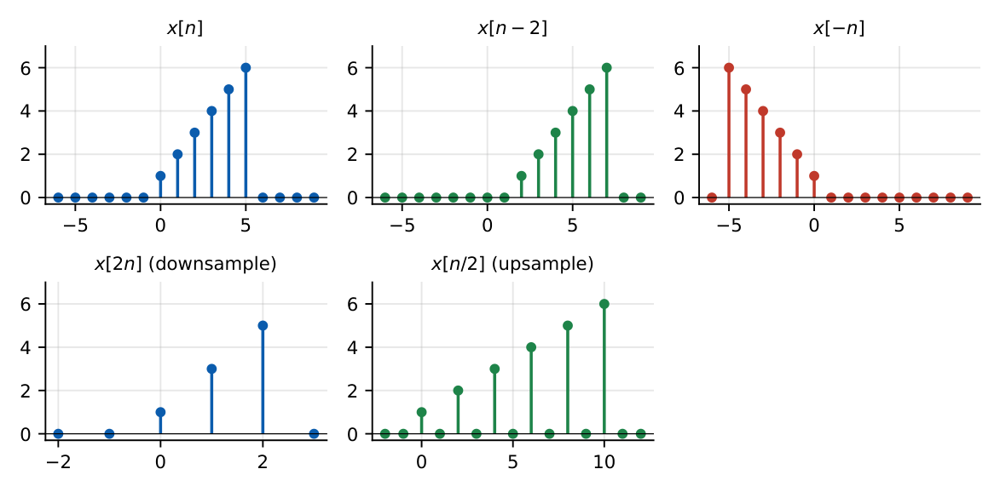
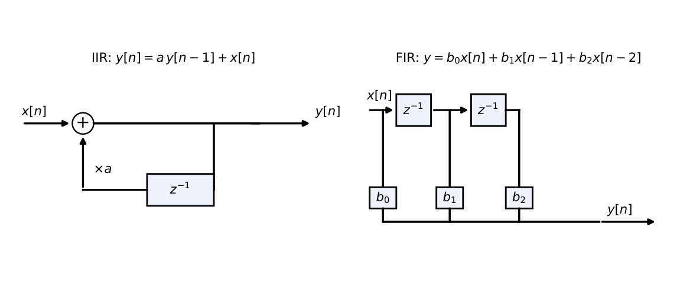
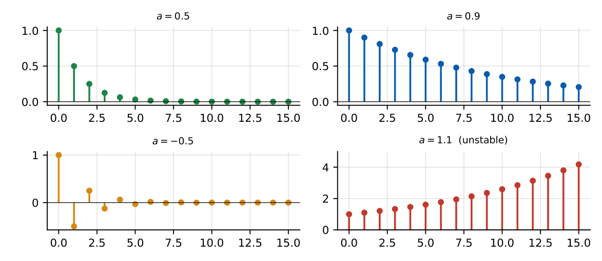

Discrete-Time Signals and Systems
In this chapter
Sequence operations (downsampling, upsampling, folding), difference equations \(\to\) impulse response, causality/stability of DT systems, FIR vs IIR. These feed straight into the DTFT, \(z\)-transform and filter chapters.
22.1 Discrete-time sequences
A sequence \(x[n]\), \(n\in\mathbb Z\), may be written as a list (with the origin marked), a formula, or a stem plot. Any sequence is a sum of scaled, shifted impulses: \(x[n]=\sum_kx[k]\delta[n-k]\).
22.2 Elementary sequences
- Unit impulse \(\delta[n]\), unit step \(u[n]=\sum_{k\le n}\delta[k]\), ramp \(r[n]=nu[n]\); \(\delta[n]=u[n]-u[n-1]\).
- Real exponential \(a^nu[n]\): decays for \(|a|<1\), grows for \(|a|>1\), alternates for \(a<0\).
- Complex exponential \(e^{j\Omega_0n}\); sinusoid \(\cos(\Omega_0n+\phi)\): frequency \(\Omega_0\) rad/sample, equivalent to \(\Omega_0+2\pi\).
- Damped sinusoid \(r^n\cos(\Omega_0n)u[n]\).
22.3 Sequence operations
- Shift \(x[n-n_0]\) (delay for \(n_0>0\)). Folding \(x[-n]\).
- Downsampling (decimation) \(y[n]=x[Mn]\): keeps every \(M\)th sample; can alias.
- Upsampling (expansion) \(y[n]=x[n/L]\) if \(L\mid n\), else \(0\): inserts \(L-1\) zeros.

22.4 Periodicity
\(x[n+N]=x[n]\) with integer \(N>0\). \(\cos(\Omega_0n)\) is periodic iff \(\Omega_0/2\pi\) is rational; \(N=2\pi m/\Omega_0\) (Chapter 15). The sum of two periodic sequences has period \(\mathrm{LCM}(N_1,N_2)\).
22.5 Energy and power
\(E=\sum|x[n]|^2\); \(P=\lim\frac1{2N+1}\sum_{-N}^{N}|x[n]|^2\); periodic: \(P=\frac1N\sum_{n=0}^{N-1}|x[n]|^2\). \(a^nu[n]\) (\(|a|<1\)): \(E=\frac1{1-|a|^2}\).
22.6 Discrete-time LTI systems
Output \(y[n]=x[n]*h[n]=\sum_kx[k]h[n-k]\). Causal iff \(h[n]=0\) for \(n<0\); BIBO stable iff \(\sum|h[n]|<\infty\); FIR if \(h\) has finite length (always stable), IIR if infinite.
22.7 Difference equations
\(\displaystyle\sum_{k=0}^{N}a_ky[n-k]=\sum_{m=0}^{M}b_mx[n-m]\) (usually \(a_0=1\)). Non-recursive (all \(a_{k\ge1}=0\)): FIR. Recursive: IIR. Solve by iteration, or as (natural response \(\propto\lambda^n\) from \(\sum a_k\lambda^{N-k}=0\)) \(+\) (forced response). With “initial rest” the system is LTI and causal.

22.8 Impulse response
\(y[n]=0.5y[n-1]+x[n]\), initial rest, \(x=\delta[n]\): \(y[0]=1\), \(y[1]=0.5\), \(y[2]=0.25\Rightarrow h[n]=(0.5)^nu[n]\). Step response \(s[n]=\sum_{k=0}^nh[k]=2\big(1-0.5^{n+1}\big)\): \(1,\ 1.5,\ 1.75,\ \ldots\to2\). In general \(s[\infty]=\sum h=\dfrac1{1-a}\).
\(y[n]=\tfrac13\big(x[n]+x[n-1]+x[n-2]\big)\): \(h=\{\tfrac13,\tfrac13,\tfrac13\}\); causal, stable, DC gain \(1\).
\(y[n]=x[n]-x[n-1]\): \(h=\{1,-1\}\); DC gain \(0\) (a high-pass).

22.9 Stability and causality
For \(h[n]=a^nu[n]\): \(\sum|a|^n=\dfrac1{1-|a|}\) finite iff \(|a|<1\). \(y[n]-1.5y[n-1]=x[n]\) has \(h=1.5^nu[n]\): unstable. A causal system with characteristic roots \(\lambda_k\) is stable iff all \(|\lambda_k|<1\).
22.10 Discrete convolution
Covered in Chapter 17: length \(L_x+L_h-1\), polynomial multiplication. Example: cascading \(y=x[n]+x[n-1]\) with itself gives \(h=\{1,2,1\}\).
Q1. \(h[n]=a^nu[n]\) is BIBO stable iff (A) \(a<1\) (B) \(|a|<1\) (C) \(|a|\le1\) (D) \(a>0\).
Q2. \(y[n]=x[2n]\) is (A) LTI (B) linear, time-varying (C) non-linear (D) causal.
Q3. An FIR system is always (A) unstable (B) stable (C) IIR (D) non-causal.
Answers: Q1 (B). Q2 (B). Q3 (B).
Q4. \(x[n]=\{1,2,3,4,5,6\}\) (\(n=0..5\)). The sequence \(x[2n]\) is (A) \(\{1,3,5\}\) (B) \(\{2,4,6\}\) (C) \(\{1,2,3\}\) (D) \(\{1,0,3,0,5\}\).
Q5. \(y[n]=0.8y[n-1]+x[n]\). The steady-state output for the unit step input is (A) \(1\) (B) \(4\) (C) \(5\) (D) \(0.8\).
Answers: Q4 (A). Q5 (C): \(1/(1-0.8)=5\).
Q6. \(\sum_n|h[n]|\) for \(h[n]=(0.5)^nu[n]\) is .
Q7. The energy of \(h[n]=(0.5)^nu[n]\) is (two decimals).
Answers: Q6: \(2\). Q7: \(4/3=1.33\).
Q8. Which are causal? (A) \(y[n]=x[n]+x[n-1]\) (B) \(y[n]=x[n+1]\) (C) \(y[n]=0.5y[n-1]+x[n]\) (D) \(y[n]=x[-n]\).
Answers: Q8: (A), (C).
(i) The upsampled sequence has zeros inserted; the downsampled one discards samples (aliasing). (ii) \(x[n/L]\) is defined only at multiples of \(L\). (iii) \(|a|=1\) is marginal, not stable. (iv) Iterating a difference equation requires the correct initial conditions.
T1. Impulse response of \(y[n]=x[n]+2x[n-1]+3x[n-2]\)? T2. Is \(y[n]-y[n-1]=x[n]\) stable?
Answers: T1: \(\{1,2,3\}\). T2: \(h=u[n]\), \(\sum|h|=\infty\): unstable (an accumulator).
- \(\delta[n]\), \(u[n]\), \(a^nu[n]\); \(x[n]=\sum x[k]\delta[n-k]\). \(x[Mn]\) decimates; \(x[n/L]\) expands with zeros.
- DT LTI: causal iff \(h[n]=0\) (\(n<0\)); stable iff \(\sum|h|<\infty\). FIR always stable.
- \(y[n]=ay[n-1]+x[n]\Rightarrow h=a^nu[n]\), stable iff \(|a|<1\), DC gain \(\frac1{1-a}\).